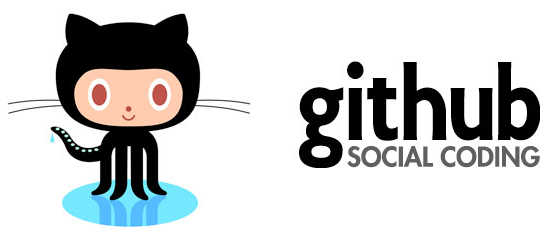

GitHub и его возможности
Распределенные системы контроля версий (DVCS) постепенно замещают собой централизованные. Если вы еще не используете одну из них — самое время попробовать.
В статье я постараюсь показать, как можно быстро начать экспериментировать с git, используя сайт github.com.
В статье не будут рассмотрены различия между разными DVCS. Также не будет детально рассматриваться работа с git, по этой теме есть множество хороших источников, которые я приведу в конце статьи.
Итак, сайт github.com позиционируется как веб-сервис хостинга проектов с использованием системы контроля версий git, а также как социальная сеть для разработчиков. Пользователи могут создавать неограниченное число репозиториев, для каждого из которых предоставляется wiki, система issue tracking-а, есть возможность проводить code review и многое другое. GitHub на данный момент является самым популярным сервисом такого рода, обогнав Sourceforge и Google Code.
Для open-souce проектов использование сайта бесплатно. При необходимости иметь приватные репозитории, есть возможность перейти на платный тарифный план:
Регистрация
Начнем с регистрации. Идем по ссылке github.com/signup/free и вводим свои данные. После регистрации мы попадаем на Dashboard нашего аккаунта:
Сейчас у нас нет ни одного репозитория, и мы можем либо создать новый репозиторий, либо ответвиться (fork) от уже существующего чужого репозитория и вести собственную ветку разработки. Затем, при желании, свои изменения можно предложить автору исходного репозитория (Pull request).
GitHub позволяет работать с репозиториями тремя способами: SSH, HTTP и Git Read-Only, соответственно предоставляя ссылки трех видов для нашего репозитория:
- git@github.com:habrauser/Hello-world.git
- habrauser@github.com/habrauser/Hello-world.git
- git://github.com/habrauser/Hello-world.git
Для того, чтобы просто забрать репозиторий на локальную машину, достаточно внутреннего протокола git (третья ссылка). Это наиболее быстрый и эффективный способ, который обеспечивает анонимный доступ только для чтения.
Возможности
Создатели сайта называют GitHub «социальной сетью для разработчиков».
Кроме размещения кода, участники могут общаться, комментировать правки друг друга, а также следить за новостями знакомых.
С помощью широких возможностей Git программисты могут объединять свои репозитории — GitHub предлагает удобный интерфейс для этого и может отображать вклад каждого участника в виде дерева.
Прямо на сайте можно просмотреть файлы проектов с подсветкой синтаксиса для большинства языков программирования.
- Можно создавать приватные репозитории, которые будут видны только вам и выбранным вами людям. Раньше такая возможность была платной.
- Есть возможность прямого добавления новых файлов в свой репозиторий через веб-интерфейс сервиса
- Код проектов можно не только скопировать через Git, но и скачать в виде обычных архивов с сайта.
- На сайте есть pastebin-сервис gist.github.com для быстрой публикации фрагментов кода.
Популярность
Первый частный репозиторий был создан 12 января 2008. К концу 2011 года в проекте уже было зарегистрировано более миллиона пользователей и более двух миллионов репозиториев. По состоянию на март 2017 года на сайте существовало более 58 миллионов репозиториев.
Многие крупные IT-компании размещают свои официальные репозитории на этом сервисе:
Acquisition by Microsoft
From 2012, Microsoft became a significant user of GitHub, using it to host open-source projects and development tools such as .NET Core, Chakra Core, MSBuild, PowerShell, PowerToys, Visual Studio Code, Windows Calculator, Windows Terminal and the bulk of its product documentation (now to be found on Microsoft Docs)
On June 4, 2018, Microsoft announced its intent to acquire GitHub for US$7.5 billion. The deal closed on October 26, 2018.[40] GitHub continued to operate independently as a community, platform and business.[41] Under Microsoft, the service was led by Xamarin's Nat Friedman, reporting to Scott Guthrie, executive vice president of Microsoft Cloud and AI. GitHub's CEO, Chris Wanstrath, was retained as a "technical fellow," also reporting to Guthrie.
There have been concerns from developers Kyle Simpson, JavaScript trainer and author, and Rafael Laguna, CEO at Open-Xchange over Microsoft's purchase, citing uneasiness over Microsoft's handling of previous acquisitions, such as Nokia's mobile business or Skype.[
This acquisition was in line with Microsoft's business strategy under CEO Satya Nadella, which has seen a larger focus on the cloud computing services, alongside development of and contributions to open-source software.[5][39][44] Harvard Business Review argued that Microsoft was intending to acquire GitHub to get access to its user base, so it can be used as a loss leader to encourage use of its other development products and services
Concerns over the sale bolstered interest in competitors: Bitbucket (owned by Atlassian), GitLab (a commercial open source product that also runs a hosted service version) and SourceForge (owned by BIZX, LLC) reported that they had seen spikes in new users intending to migrate projects from GitHub to their respective services